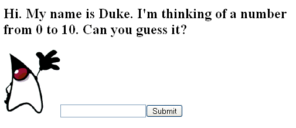

A Simple JavaServer Faces Application
This section describes the general steps involved in developing a simple JavaServer Faces application from the perspective of different development roles. These roles are:
Page author, who creates pages by using the JavaServer Faces tag libraries.
Application developer, who programs custom converters, validators, listeners, and backing beans.
Component author, who creates custom UI components and renderers.
Application architect, who configures the application, including defining the navigation rules, configuring custom objects, and creating deployment descriptors.
This application is quite simple, and so it does not include any custom components. See chapter Writing a Method to Handle a Value-Change Event to learn about the responsibilities of a component writer.
Steps in the Development Process
Developing a simple JavaServer Faces application usually requires these tasks:
Mapping the FacesServlet instance.
Creating the pages using the UI component and core tags.
Defining page navigation in the application configuration resource file.
Developing the backing beans.
Adding managed bean declarations to the application configuration resource file.
The example used in this section is the guessNumber application, located in the tut-install/javaeetutorial5/examples/web/ directory. It asks you to guess a number between 0 and 10, inclusive. The second page tells you whether you guessed correctly. The example also checks the validity of your input. The system log prints Duke’s number. Figure 10-2 shows what the first page looks like.
Figure 10-2 The greeting.jsp Page of the guessNumber Application
The source for the guessNumber application is located in the tut-install/javaeetutorial5/examples/web/guessNumber/ directory created when you unzip the tutorial bundle (see Chapter 2, Using the Tutorial Examples).
To build, package, deploy, and run this example using NetBeans IDE, follow these steps:
In NetBeans IDE, select File→Open Project.
In the Open Project dialog, navigate to:
tut-install/javaeetutorial5/examples/web/
Select the guessNumber folder.
Select the Open as Main Project check box.
Click Open Project.
In the Projects tab, right-click the guessNumber project, and select Undeploy and Deploy.
To run the application, open the URL http://localhost:8080/guessNumber in a browser.
To build, package, and deploy this example using Ant, follow these steps:
Go to tut-install/javaeetutorial5/examples/web/guessNumber/.
Type ant.
Start the Application Server.
Type ant deploy.
To run the application, open the URL http://localhost:8080/guessNumber in a browser.
To learn how to configure the example, refer to the deployment descriptor (the web.xml file), which includes the following configurations:
A display-name element that specifies the name that tools use to identify the application.
A servlet element that identifies the FacesServlet instance.
A servlet-mapping element that maps FacesServlet to a URL pattern.
Mapping the FacesServlet Instance
All JavaServer Faces applications must include a mapping to the FacesServlet instance in their deployment descriptors. The FacesServlet instance accepts incoming requests, passes them to the life cycle for processing, and initializes resources. The following piece of the guessNumber example’s deployment descriptor performs the mapping to the FacesServlet instance:
<servlet>
<display-name>FacesServlet</display-name>
<servlet-name>FacesServlet</servlet-name>
<servlet-class>javax.faces.webapp.FacesServlet
</servlet-class>
<load-on-startup>1</load-on-startup>
</servlet>
<servlet-mapping>
<servlet-name>FacesServlet</servlet-name>
<url-pattern>/guess/*</url-pattern>
</servlet-mapping>The mapping to FacesServlet shown above uses a prefix mapping to identify a JSP page as having JavaServer Faces components. Because of this, the URL to the first JSP page of the application must include the mapping. To accomplish this, the guessNumber example includes an HTML page that has the URL to the first JSP page:
<a href="guess/greeting.jsp">
See Identifying the Servlet for Life Cycle Processing for more information on how to map the FacesServlet instance.
Creating the Pages
Creating the pages is the page author’s responsibility. This task involves laying out UI components on the pages, mapping the components to beans, and adding tags that register converters, validators, or listeners onto the components.
In this section you will build the tut-install/javaeetutorial5/examples/examples/web/guessNumber/web/greeting.jsp page, the first page of the guessNumber application. As with any JSP page, you’ll need to add the usual HTML and HEAD tags to the page:
<HTML xmlns="http://www.w3.org/1999/xhtml"xml:lang="en">
<HEAD> <title>Hello</title> </HEAD>
...
</HTML>You’ll also need a page directive that specifies the content type:
<%@ page contentType="application/xhtml+xml" %>
Declaring the Tag Libraries
In order to use JavaServer Faces components in JSP pages, you need to give your pages access to the two standard tag libraries, the HTML component tag library and the core tag library using taglib declarations:
<%@ taglib uri="http://java.sun.com/jsf/html" prefix="h" %> <%@ taglib uri="http:.//java.sun.com/jsf/core" prefix="f" %>
The first taglib declaration declares the HTML component tag library with a prefix, h. All component tags in the page have this prefix. The core tag library is declared with the prefix f. All core tags in the page have this prefix.
User Interface Component Model includes a table that lists all the component tags included with JavaServer Faces technology. Adding UI Components to a Page Using the HTML Component Tags discusses the tags in more detail.
Adding the view and form Tags
All JavaServer Faces pages are represented by a tree of components, called a view. The view tag represents the root of the view. All JavaServer Faces component tags must be inside of a view tag, which is defined in the core tag library.
The form tag represents an input form component, which allows the user to input some data and submit it to the server, usually by clicking a button. All UI component tags that represent editable components (such as text fields and menus) must be nested inside the form tag. In the case of the greeting.jsp page, some of the tags contained in the form are outputText, inputText, commandButton, and message. You can specify an ID for the form tag. This ID maps to the associated form UI component on the server.
With the view and form tags added, our page looks like this (minus the HTML and HEAD tags):
<%@ taglib uri="http://java.sun.com/jsf/html" prefix="h" %>
<%@ taglib uri="http://java.sun.com/jsf/core" prefix="f" %>
<f:view>
<h:form id="helloForm1">
</h:form>
</f:view>
Adding a Label Component
The outputText tag represents a label. The greeting.jsp page has two outputText tags. One of the tags displays the number 0. The other tag displays the number 10:
<h:outputText lang="en_US"
value="#{UserNumberBean.minimum}"/>
<h:outputText value="#{UserNumberBean.maximum}"/>The value attributes of the tags get the values from the minimum and maximum properties of UserNumberBean using value expressions, which are used to reference data stored in other objects, such as beans. See Backing Beans for more information on value expressions.
With the addition of the outputText tags (along with some static text), the greeting page looks like the following:
<%@ taglib uri="http://java.sun.com/jsf/html" prefix="h" %>
<%@ taglib uri="http://java.sun.com/jsf/core" prefix="f" %>
<f:view>
<h:form id="helloForm1">
<h2>Hi. My name is Duke. I’m thinking of a number from
<h:outputText lang="en_US"
value="#{UserNumberBean.minimum}"/> to
<h:outputText value="#{UserNumberBean.maximum}"/>.
Can you guess it?</h2>
</h:form>
</f:view>
Adding an Image
To display images on a page, you use the graphicImage tag. The url attribute of the tag specifies the path to the image file. Let’s add Duke to the page using a graphicImage tag:
<%@ taglib uri="http://java.sun.com/jsf/html" prefix="h" %>
<%@ taglib uri="http://java.sun.com/jsf/core" prefix="f" %>
<f:view>
<h:form id="helloForm1">
<h2>Hi. My name is Duke. I’m thinking of a number from
<h:outputText lang="en_US"
value="#{UserNumberBean.minimum}"/> to
<h:outputText value="#{UserNumberBean.maximum}"/>.
Can you guess it?</h2>
<h:graphicImage id="waveImg" url="/wave.med.gif" />
</h:form>
</f:view>
Adding a Text Field
The inputText tag represents a text field component. In the guessNumber example, this text field takes an integer input value. The instance of this tag included in greeting.jsp has three attributes: id, label, and value.
<h:inputText id="userNo" label="User Number"
value="#{UserNumberBean.userNumber}">
...
</h:inputText>The id attribute corresponds to the ID of the component object represented by this tag. In this case, an id attribute is required because the message tag (which is used to display validation error messages) needs it to refer to the userNo component.
The label attribute specifies the name to be used by error messages to refer to the component. In this example, label is set to User Number. As an example, if a user were to enter 23, the error message that would be displayed is:
User Number: Validation Error: Value is greater than allowable maximum of 10.
The value attribute binds the userNo component value to the bean property UserNumberBean.userNumber, which holds the data entered into the text field.
After adding the inputText tag, the greeting page looks like the following:
<%@ taglib uri="http://java.sun.com/jsf/html" prefix="h" %>
<%@ taglib uri="http://java.sun.com/jsf/core" prefix="f" %>
<f:view>
<h:form id="helloForm1">
<h2>Hi. My name is Duke. I’m thinking of a number from
<h:outputText lang="en_US"
value="#{UserNumberBean.minimum}"/> to
<h:outputText value="#{UserNumberBean.maximum}"/>.
Can you guess it?</h2>
<h:graphicImage id="waveImg" url="/wave.med.gif" />
<h:inputText id="userNo" label="User Number"
value="#{UserNumberBean.userNumber}">
...
</h:inputText>
</h:form>
</f:view>See Backing Beans for more information on creating beans, binding to bean properties, referencing bean methods, and configuring beans.
See Using Text Components for more information on the inputText tag.
Registering a Validator on a Text Field
By nesting the validateLongRange tag within a text field’s component’s tag, the page author registers a LongRangeValidator onto the text field. This validator checks whether the component’s local data is within a certain range, defined by the validateLongRange tag’s minimum and maximum attributes.
In the case of the greeting page, you need to validate the number the user enters into the text field. So, you add a validateLongRange tag inside the inputText tag. The maximum and minimum attributes of the validateLongRange tag get their values from the minimum and maximum properties of UserNumberBean using the value expressions #{UserNumberBean.minimum} and #{UserNumberBean.maximum}. See Backing Beans for details on value expressions.
After adding the validateLongRange tag, the page looks like this:
<%@ taglib uri="http://java.sun.com/jsf/html" prefix="h" %>
<%@ taglib uri="http://java.sun.com/jsf/core" prefix="f" %>
<f:view>
<h:form id="helloForm1">
<h2>Hi. My name is Duke. I’m thinking of a number from
<h:outputText lang="en_US"
value="#{UserNumberBean.minimum}"/> to
<h:outputText value="#{UserNumberBean.maximum}"/>.
Can you guess it?</h2>
<h:graphicImage id="waveImg" url="/wave.med.gif" />
<h:inputText id="userNo" label="User Number"
value="#{UserNumberBean.userNumber}">
<f:validateLongRange
minimum="#{UserNumberBean.minimum}"
maximum="#{UserNumberBean.maximum}" />
</h:inputText>
</h:form>
</f:view>For more information on the standard validators included with JavaServer Faces technology, see Using the Standard Validators.
Adding a Custom Message
JavaServer Faces technology provides standard error messages that display on the page when conversion or validation fails. In some cases, you might need to override the standard message. For example, if a user were to enter a letter into the text field on greeting.jsp, he or she would see the following error message:
User Number: ’m’ must be a number between -2147483648 and 2147483647 Example: 9346
This is wrong because the field really only accepts values from 0 through 10.
To override this message, you add a converterMessage attribute on the inputText tag. This attribute references the custom error message:
<h:inputText id="userNo" label="User Number"
value="#{UserNumberBean.userNumber}"
converterMessage="#{ErrMsg.userNoConvert}">
...
</h:inputText>The expression that converterMessage uses references the userNoConvert key of the ErrMsg resource bundle. The application architect needs to define the message in the resource bundle and configure the resource bundle. See Configuring Error Messages for more information on this.
See Referencing Error Messages for more information on referencing error messages.
Adding a Button
The commandButton tag represents the button used to submit the data entered in the text field. The action attribute specifies an outcome that helps the navigation mechanism decide which page to open next. Defining Page Navigation discusses this further.
With the addition of the commandButton tag, the greeting page looks like the following:
<%@ taglib uri="http://java.sun.com/jsf/html" prefix="h" %>
<%@ taglib uri="http://java.sun.com/jsf/core" prefix="f" %>
<f:view>
<h:form id="helloForm1">
<h2>Hi. My name is Duke. I’m thinking of a number from
<h:outputText lang="en_US"
value="#{UserNumberBean.minimum}"/> to
<h:outputText value="#{UserNumberBean.maximum}"/>.
Can you guess it?</h2>
<h:graphicImage id="waveImg" url="/wave.med.gif" />
<h:inputText id="userNo" label="User Number"
value="#{UserNumberBean.userNumber}">
<f:validateLongRange
minimum="#{UserNumberBean.minimum}"
maximum="#{UserNumberBean.maximum}" />
</h:inputText>
<h:commandButton id="submit"
action="success" value="Submit" />
</h:form>
</f:view>See Using Command Components for Performing Actions and Navigation for more information on the commandButton tag.
Displaying Error Messages
A message tag is used to display error messages on a page when data conversion or validation fails after the user submits the form. The message tag in greeting.jsp displays an error message if the data entered in the field does not comply with the rules specified by the LongRangeValidator implementation, whose tag is registered on the text field component.
The error message displays wherever you place the message tag on the page. The message tag’s style attribute allows you to specify the formatting style for the message text. Its for attribute refers to the component whose value failed validation, in this case the userNo component represented by the inputText tag in the greeting.jsp page.
Put the message tag near the end of the page:
<%@ taglib uri="http://java.sun.com/jsf/html" prefix="h" %>
<%@ taglib uri="http://java.sun.com/jsf/core" prefix="f" %>
<f:view>
<h:form id="helloForm1">
<h2>Hi. My name is Duke. I’m thinking of a number from
<h:outputText lang="en_US"
value="#{UserNumberBean.minimum}"/> to
<h:outputText value="#{UserNumberBean.maximum}"/>.
Can you guess it?</h2>
<h:graphicImage id="waveImg" url="/wave.med.gif" />
<h:inputText id="userNo" label="User Number"
value="#{UserNumberBean.userNumber}"
converterMessage="#{ErrMsg.userNoConvert}">
<f:validateLongRange
minimum="#{UserNumberBean.minimum}"
maximum="#{UserNumberBean.maximum}" />
</h:inputText>
<h:commandButton id="submit"
action="success" value="Submit" />
<h:message showSummary="true" showDetail="false"
style="color: red;
font-family: ’New Century Schoolbook’, serif;
font-style: oblique;
text-decoration: overline"
id="errors1"
for="userNo"/>
</h:form>
</f:view>Now you have completed the greeting page. Assuming you have also done the response.jsp page, you can move on to defining the page navigation rules.
Defining Page Navigation
Defining page navigation involves determining which page to go to after the user clicks a button or a hyperlink. Navigation for the application is defined in the application configuration resource file using a powerful rule-based system. Here is one of the navigation rules defined for the guessNumber example:
<navigation-rule>
<from-view-id>/greeting.jsp</from-view-id>
<navigation-case>
<from-outcome>success</from-outcome>
<to-view-id>/response.jsp</to-view-id>
</navigation-case>
</navigation-rule>
<navigation-rule>
<from-view-id>/response.jsp</from-view-id>
<navigation-case>
<from-outcome>success</from-outcome>
<to-view-id>/greeting.jsp</to-view-id>
</navigation-case>
</navigation-rule>This navigation rule states that when the button on the greeting page is clicked the application will navigate to response.jsp if the navigation system is given a logical outcome of success.
In the case of the Guess Number example, the logical outcome is defined by the action attribute of the UICommand component that submits the form:
<h:commandButton id="submit" action="success"
value="Submit" />To learn more about how navigation works, see Navigation Model.
Configuring Error Messages
In case the standard error messages don’t meet your needs, you can create new ones in resource bundles and configure the resource bundles in your application configuration resource file. The guessNumber example has one custom converter message, as described in Adding a Custom Message.
This message is stored in the resource bundle, ApplicationMessages.properties:
userNoConvert=The value you entered is not a number.
The resource bundle is configured in the application configuration file:
<application>
<resource-bundle>
<base-name>guessNumber.ApplicationMessages</base-name>
<var>ErrMsg</var>
</resource-bundle>
</application>The base-name element indicates the fully-qualified name of the resource bundle. The var element indicates the name by which page authors refer to the resource bundle with the expression language. Here is the inputText tag again:
<h:inputText id="userNo" label="User Number"
value="#{UserNumberBean.userNumber}"
converterMessage="#{ErrMsg.userNoConvert}">
...
</h:inputText>The expression on the converterMessage attribute references the userNoConvert key of the ErrMsg resource bundle.
See Registering Custom Error Messages for more information on configuring custom error messages.
Developing the Beans
Developing beans is one responsibility of the application developer. A typical JavaServer Faces application couples a backing bean with each page in the application. The backing bean defines properties and methods that are associated with the UI components used on the page.
The page author binds a component’s value to a bean property using the component tag’s value attribute to refer to the property. Recall that the userNo component on the greeting.jsp page references the userNumber property of UserNumberBean:
<h:inputText id="userNo" label="User Number"
value="#{UserNumberBean.userNumber}">
...
</h:inputText>Here is the userNumber backing bean property that maps to the data for the userNo component:
Integer userNumber = null;
...
public void setUserNumber(Integer user_number) {
userNumber = user_number;
}
public Integer getUserNumber() {
return userNumber;
}
public String getResponse() {
if(userNumber != null &&
userNumber.compareTo(randomInt) == 0) {
return "Yay! You got it!";
} else {
return "Sorry, "+userNumber+" is incorrect.";
}
}See Backing Beans for more information on creating backing beans.
Adding Managed Bean Declarations
After developing the backing beans to be used in the application, you need to configure them in the application configuration resource file so that the JavaServer Faces implementation can automatically create new instances of the beans whenever they are needed.
The task of adding managed bean declarations to the application configuration resource file is the application architect’s responsibility. Here is a managed bean declaration for UserNumberBean:
<managed-bean>
<managed-bean-name>UserNumberBean</managed-bean-name>
<managed-bean-class>
guessNumber.UserNumberBean
</managed-bean-class>
<managed-bean-scope>session</managed-bean-scope>
<managed-property>
<property-name>minimum</property-name>
<property-class>long</property-class>
<value>0</value>
</managed-property>
<managed-property>
<property-name>maximum</property-name>
<property-class>long</property-class>
<value>10</value>
</managed-property>
</managed-bean>This declaration configures UserNumberBean so that its minimum property is initialized to 0, its maximum property is initialized to 10, and it is added to session scope when it is created.
A page author can use the unified EL to access one of the bean’s properties, like this:
<h:outputText value="#{UserNumberBean.minimum}"/>For more information on configuring beans, see Configuring a Bean.